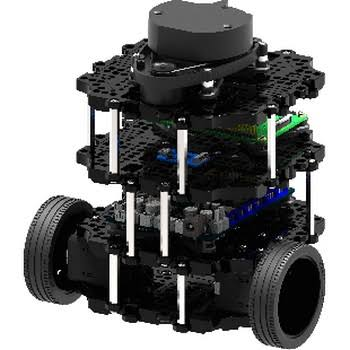

Cartographie Guidée !

Le projet de la cartographie guidée est un projet développé en langage python et ROS2 sur un turtleBot lors du semestre P26 en GI02 (c'est-à-dire le 2ème semestre en branche informatique dans la 3ème année).
Il s’agit d’un projet en binôme
- Ce projet s'inscrit dans le cadre de l'UV SY31 Capteurs pour les systèmes intelligents, et a pour objectif de mettre en œuvre une solution robotique combinant perception et localisation pour un robot mobile évoluant dans un labyrinthe. Le sujet traité est celui de la cartographie guidée : un TurtleBot3 Burger est guidé manuellement à l'intérieur d'un labyrinthe à l'aide de commandes clavier, tout en construisant progressivement une carte de son environnement. Le robot utilise une fusion d'informations provenant de ses capteurs proprioceptifs (encodeurs de roue et gyroscope) pour estimer sa position, et de son LiDAR pour générer une carte basée sur l'accumulation de points dans un repère fixe. En parallèle, une caméra embarquée permet de détecter des flèches colorées disposées dans le labyrinthe. Cette reconnaissance visuelle assiste l'opérateur dans ses choix directionnels pendant la commande. Le projet a été implémenté sous ROS2 (Robot Operating System 2) en Python, en s'appuyant sur une architecture modulaire distribuée en plusieurs nœuds spécialisés. Nous avons calculé nous-mêmes l'odométrie à partir des capteurs proprioceptifs.